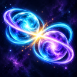
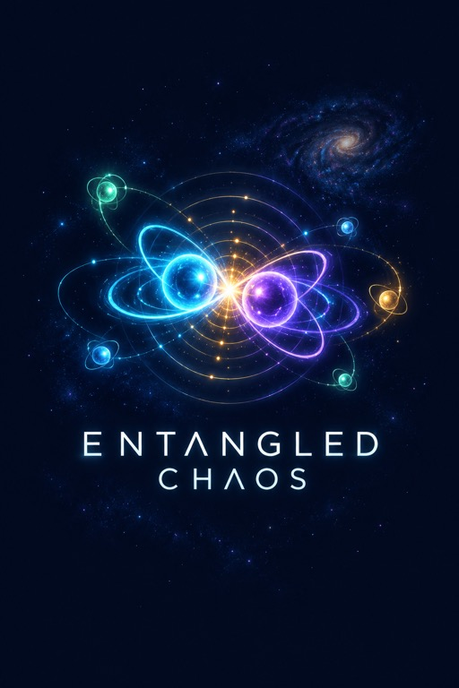
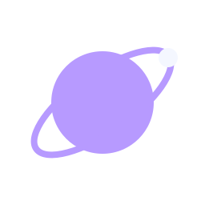
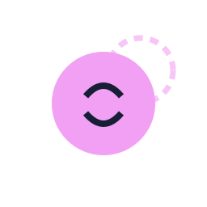
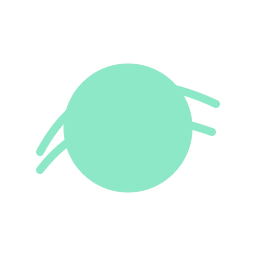

Make a spark
Tap empty space in the arena. Each accepted tap spends a charge and creates a spark that grows, catches nearby particles, then fades. You can tap again while a chain is running.

Entangled ChaosA LITTLE CHAOS. A WHOLE UNIVERSE.
One spark. Cosmic consequences. Choose your moment, tap to create a spark, and trigger a chain reaction. Discover particles with unique abilities and solve puzzles with limited taps.

01 / THE CHAIN REACTION
A moving universe, a handful of taps, and a moment worth waiting for.
Tap empty space in the arena. Each accepted tap spends a charge and creates a spark that grows, catches nearby particles, then fades. You can tap again while a chain is running.
Each explosion can ignite the next. Read the movement and make your limited taps count.
Clear the targets, follow an arrow sequence, or do both. Check the objective before you spend your one to three taps.
The first-round guide teaches taps, targets, scores and chain reactions. When you first encounter a black hole, a separate guide explains its danger.
Watch your live score grow toward the round’s star targets. Chain reactions, particles triggered, tap timing and time left all contribute to your score.
WATCH / THE GAME IN MOTION
A 4:41 introduction to the basics and the opening particle discoveries, with expressive English narration, text, icons and game audio.
Playing loads YouTube’s privacy-enhanced player. Watch on YouTube ↗ · Privacy
See current access information below.
02 / MEET YOUR UNIVERSE
Discover particles with their own personalities. Learn what each discovery brings to the field, then use its strengths to shape your next chain.

The foundation of a chain. Catch it in a spark or another explosion to ignite it. Wait for a close group to turn one tap into several reactions.

One pair. One fate. Trigger one partner and the other explodes too, carrying your chain across the field. Look at both positions before you tap.

A hazard, not a clearable target. Orange absorbs a blast and turns red; another distinct blast is fatal. Green has an extra protection stage. Gravity does not restore protection. Keep ordinary chains away from a vulnerable hole.

Arrives from a random corner every two seconds. Its head and tail can ignite particles, and its explosion has twice the normal radius. Direct contact with Direction particles or Black Holes bounces safely; its blast can still be dangerous.

When triggered, releases a field that pushes nearby bodies away instead of igniting them. Use the expanding field to open space or gather a useful formation elsewhere. Neutrinos ignore it; Black Holes feel a weaker push. Repulsor encounters can shrink its range.
A small first explosion is followed by a larger echo at the same position after 1.4 seconds. Plan for where moving targets will be when that second wave arrives.

Alternates between solid and ghost states every 1.5 seconds. Only the solid state can be triggered. Its blast is larger than Normal. Solid contact or its explosion can collapse a Black Hole immediately unless a shield blocks the interaction.

Trigger the displayed arrows in the required order. The arrow is a sequence symbol, not its direction of travel. Some objectives also require every target to be cleared. Direct Comet contact bounces, but a Comet explosion can trigger it.

The portals move at half regular particle speed. A linked pair transports moving bodies, including Neutrinos, without changing the traveller’s velocity. Triggering a Wormhole creates explosions at both ends. Photons are absorbed rather than transported. Wormholes ignore gravity fields.
Draws nearby bodies into a spiral. Gravity Stars pull especially strongly on each other and fuse on contact into Super Gravity, with a larger body, range and effect. Near an unshielded Black Hole they orbit rather than being absorbed; they do not repair its protection.

Never explodes and is not a clearable target. Ignores Magnetar and Repulsor forces. A solid receiver absorbs its energy; each Photon adds a full base radius to that receiver’s next explosion. Black Holes absorb Photons safely; their energy then requires a charged particle’s blast to advance normal protection stages. Superposition and Repulsor retain their special interactions.

Switches between push and pull every two seconds. Each Magnetar has its own timer; two or more have staggered phases. Opposite-phase Magnetars attract each other at double strength; matching phases repel at double strength. During pull, captured particles travel with it until the next push releases them. Neutrinos and Photons ignore the field. Near a Black Hole, the Magnetar moves inward during pull and outward during push. The Black Hole keeps its direction and cannot be captured.

Releases one gradually expanding freeze wave, with 2.2 times the radius of a Normal explosion and no explosion area. Frozen targets stop moving and explode after three seconds, or sooner when another blast reaches them. Higgs ignores other Higgs waves and Neutrino explosions. Two touching Higgs fuse into one larger body with four times the ordinary Higgs wave radius; the freeze still lasts three seconds. Photons and Neutrinos are immune. Higgs cannot absorb Photons; they pass through it. An unshielded Black Hole absorbs the whole wave without freezing.

Passes through other bodies, except another Neutrino, while still absorbing Photons and travelling through Wormholes. Only tap sparks, Neutrino blasts and Antimatter blasts can trigger it. Its explosion radius is 25% larger than Normal. Gravity, push, pull and freeze effects do not affect it.

Its ordinary explosion has twice the normal radius. Contact with most solid particles instead creates a field-wide annihilation. Photons are absorbed, Neutrinos pass through, and Antimatter or Black Hole contact bounces. Its own blast rebounds from Black Holes without charging or collapsing them; secondary explosions remain dangerous.
Inspired by the universe. Designed for play. Particle abilities are imaginative game mechanics, not literal physics simulations.
03 / A COSMIC JOURNEY
Explore a scrolling galaxy map, discovering new particles and surprising combinations along the way. Each discovery returns throughout the campaign, with a dedicated stretch of practice rounds. Particles move independently, making the right moment different in every field.
The map’s colors help you choose your next challenge, from easy rounds to very hard puzzles.
Earn over 100 achievements, from your first spark to rare particle combinations. Revisit rounds to chase three stars.
Compare round scores and furthest progress on the leaderboards, using your guest profile or supported account sign-in. Platform gamer profiles and private cloud accounts are separate.
Your progress stays saved on your device. Queued results sync when connectivity returns. Private cloud progress requires a supported signed-in account; a Play Games profile alone does not enable cloud sync.
A HELPING HAND
Orbit Scan lets you inspect the field. Direction Trim helps with arrow objectives, Horizon Shield protects against Black Hole danger, Blast ×2 enlarges a tap spark, and Extra Tap adds a charge within the round’s limit.
Where available, an optional rewarded ad grants 20 diamonds, up to six rewards per UTC day. Diamond packs and ad availability depend on your platform and store access.
AVAILABLE ON ANDROID
Download Entangled Chaos from Google Play and start exploring a universe of particle puzzles. Play offline, learn new interactions and return to earlier rounds to improve your score. Optional purchases and rewarded ads require connectivity and availability.
iOS is awaiting App Store review. For help, contact support.
EXPLORE THE GAME
Start with ten taps, clear changing waves and carry your unused stock. Watch the demo and learn the strategy.
Understand sparks, limited taps, objectives and scoring.
Learn what each particle does and how its abilities change a chain.
Plan around hazards and use timing to keep the reaction going.
Watch the narrated gameplay guide →
Physics puzzles on Android: offline play, levels and strategy →
BEYOND THE GAME
Why can neutrinos pass through matter? What makes a pulsar flash? Explore the real physics behind the cast, with sources from scientific institutions and clear explanations of the game’s creative liberties.
Explore physics stories →